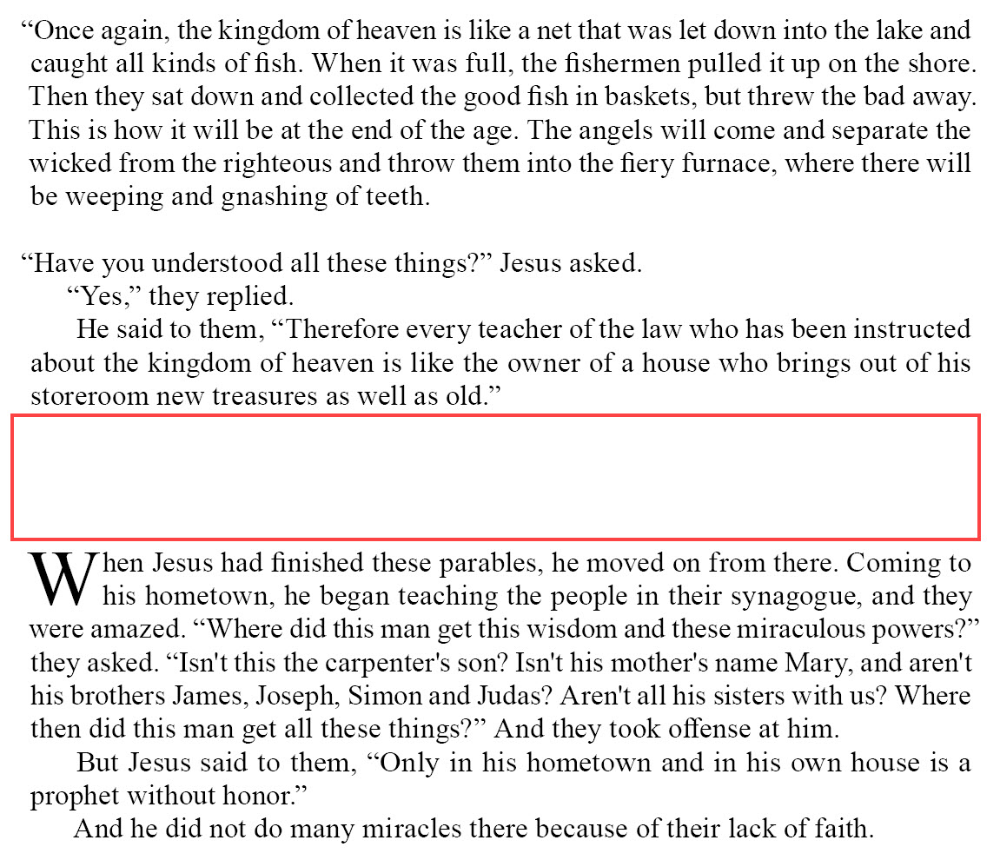

sd#
Summary
- Description
-
Semantic division (semantic space). Vertical space used to divide the text into sections, in a manner similar to the structure added through a sequence of heading texts with (ms) or (s). The purpose of
sd#is distinct from (b) which primarily denotes whitespace (in particular at poetic stanza breaks) and does not imply a hierarchy or division.-
The variable
#represents the level of division be marked.
-
- Syntax
-
-
USFM:
\sd#_{content} -
USX:
<para style="sd#">{content}</para>
-
- Added
-
3.0
Properties
- StyleType
-
Paragraph
- OccursUnder
-
[ChapterContent] - TextType
-
Section
- TextProperties
-
paragraph, publishable, level_#
Examples
Example 1. Matthew 13.51-54 (NIV “Books of the Bible”).
\m
\v 51 “Have you understood all these things?” Jesus asked.
\p “Yes,” they replied.
\p
\v 52 He said to them, “Therefore every teacher of the law who has been
instructed about the kingdom of heaven is like the owner of a house who
brings out of his storeroom new treasures as well as old.”
\sd2
\p
\v 53 When Jesus had finished these parables, he moved on from there.
\v 54 Coming to his hometown, he began teaching the people in their synagogue,
and they were amazed. “Where did this man get this wisdom and these miraculous
powers?” they asked.| In this layout design, chapter and verse numbers are suppressed, and new sections begin with drop capital. |
